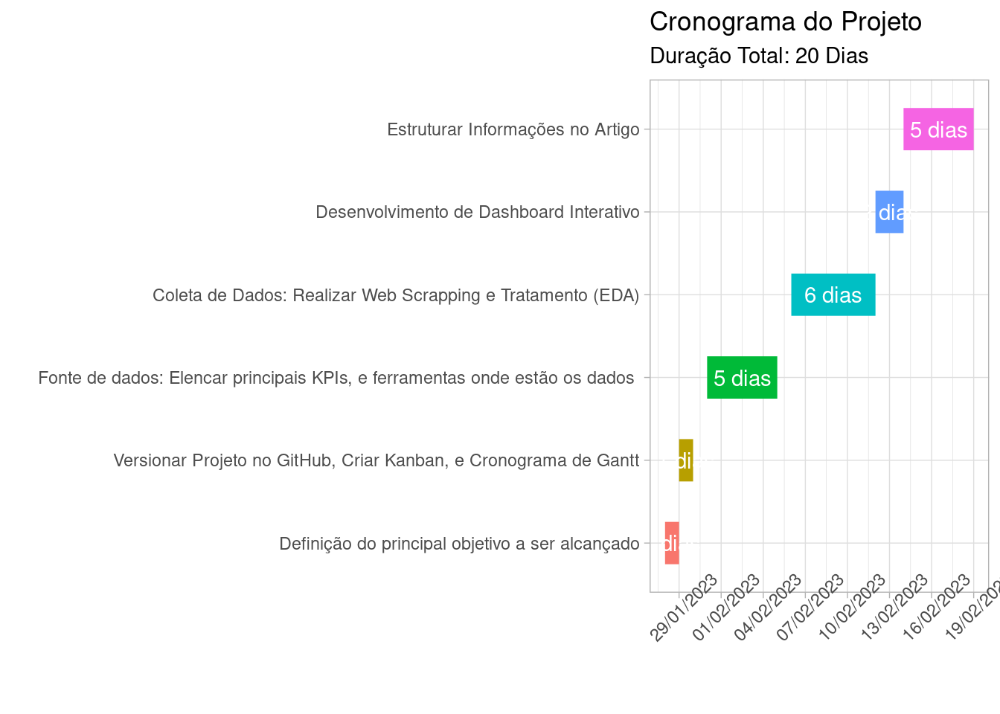

Utilizar técnicas de Data Science, Design Thinking e Metodologias Ágeis para entender quais são os principais indicadores de marketing e desenvolver um dashboard interativo.
Motivação do Trabalho
O setor de marketing é responsável por desenvolver estratégias de promoção e posicionamento das marcas no mercado varejista, conscientizando o público alvo sobre seus produtos e assim aumentando a receita por meio da “demanda estimulada”.
A globalização tornou o varejo um setor altamente competitivo. Onde a assertividade de marketing é um fator crucial para se destacar entre a concorrência, ganhar relevância e assim aumentar o marketshare da empresa.
Direcionadas para a cultura de data driven cada vez mais as organizações tomam decisões baseadas em dados, onde os KPIs (Key Performance Indicator) são o “leme do barco” e responsáveis por:
Medir o sucesso das Metas e/ou OKRs;
Acompanhar o progresso das iniciativas em andamento;
Identificar principais pontos de melhorias para “correção da rota”.
Organização do Trabalho
Cronograma de Projeto
Utilizamos o gráfico de Gantt para elaborar um cronograma de projeto e assim organizar tempos e processos.
#Utilizaremos a biblioteca tidyverse para o tratamento, manipulação e vizualização de dados.library(tidyverse)# Criamos um dataset com as principais tarefas e temposdados <-tibble(tarefa =c("Definição do principal objetivo a ser alcançado","Versionar Projeto no GitHub, Criar Kanban, e Cronograma de Gantt","Fonte de dados: Elencar principais KPIs, e ferramentas onde estão os dados ","Coleta de Dados: Realizar Web Scrapping e Tratamento (EDA)","Desenvolvimento de Dashboard Interativo","Estruturar Informações no Artigo"),inicio =as.Date(c("2023-01-28", "2023-01-29", "2023-01-31","2023-02-06","2023-02-12","2023-02-14")),fim =as.Date(c("2023-01-29", "2023-01-30", "2023-02-05","2023-02-12","2023-02-14","2023-02-19"))) %>%mutate(tarefa =fct_inorder(tarefa), duracao =as.numeric(fim - inicio))# Criar o gráfico de Gantt com o ggplotggplot(dados, aes(x = inicio, y = tarefa, xend = fim, yend = tarefa, color = tarefa)) +geom_segment(size =10,show.legend =FALSE) +theme_light()+scale_x_date(date_labels ="%d/%m/%Y",date_breaks ="3 days", limits =c(min(dados$inicio),max(dados$fim))) +geom_text(aes(x = inicio + duracao/2, y = tarefa, label =paste0(duracao, " dias")),color="white")+theme(axis.text.x =element_text(angle =45))+labs(title ="Cronograma do Projeto", x ="", y ="", fill ="",subtitle =paste("Duração Total:",sum(as.numeric(dados$fim - dados$inicio)),"Dias"))

Versionar projeto no GitHub
O trabalho foi desenvolvido usando um “Projeto” dentro da IDE Rstudio, e também criamos um repositório do github para ajudar no armazenamento e versionamento de todos os arquivos.
Imagem do Repositório
Organização no Kanban
Adotamos a ferramenta Kanban para organizar as atividades do projeto no formato de metodologia ágil e assim ajudar no microgerenciamento:
Imagem do Kanban
Principais KPIs Utilizados No Mercado
Atualmente muitas organizações adotam a estrategia multicanal e/ou omnichannel visando fornecer uma experiência consistente e integrada ao cliente.
Pensando nisso aborademos os TOP 15 KPIs mais utilizados e realizando a divisão entre ambiente online, físico e híbrido.
Ambiente Online:
Os KPIs mais importantes do ambiente virtual onde as interações acontecem exclusivamente por meio da internet são:
Taxa de abertura de e-mails: Mede a porcentagem de destinatários de e-mails de marketing que abrem o e-mail;
Taxa de cliques: Mede a porcentagem de pessoas que clicam em um link em um e-mail de marketing ou anúncio online;
Engajamento nas redes sociais: Mede quantidade de interações dos seguidores com as postagens. Geralmente as mais utilizadas são: curtidas, comentários e compartilhamentos;
Posicionamento nos motores de busca(SEO): Mede a posição em que uma página da web aparece nos resultados dos motores de busca, como Google, quando um usuário pesquisa uma determinada palavra-chave;
Visitas ao site: Mede a quantidade de visitas únicas que um site recebe em um determinado período;
Vendas por clique: Mede a receita gerada por cada clique em um anúncio online em uma loja virtual;
Ambiente Físico:
Os KPIs mais importantes do ambiente físico onde as interações acontecem nas lojas (shoppings, supermercados, academias, etc) são:
Vendas por metro quadrado: Mede a quantidade de vendas por área de venda, geralmente (M²), da loja;
Vendas por funcionário: Mede a quantidade de vendas por cada funcionário;
Taxa de conversão de vendas: Mede a porcentagem de visitantes da loja que efetuam uma compra;
Tempo médio de permanência na loja: Mede o tempo médio que clientes passam na loja;
Taxa de retorno de visitantes: Mede a porcentagem de clientes que retornam à loja para fazer uma compra novamente;
Ambiente Híbrido:
Alguns KPIs são híbridos porque podem ser utilizados tanto no ambiente online e quanto no físico:
Taxa de conversão de vendas: Mede a porcentagem de visitantes da loja que efetuam uma compra;
Número de vendas por cliente: Mede a quantidade média de compras realizadas por cada cliente;
Dwell Time (tempo de permanência): Mede o tempo que os clientes passam em áreas específicas da loja;
Custo por cliente adquirido (CPA): Mede o custo médio de adquirir um novo cliente, incluindo todas as despesas de marketing e vendas;
Net promoter score (NPS): Mede a lealdade e satisfação do cliente, avaliando a probabilidade de ele recomendar a marca ou produto para outras pessoas.
Fontes De Dados Dos KPIs
Os KPIs de marketing tem diversas fontes de dados e empresas com setores de marketing mais robustos geralmente investem em sistemas estruturados.
O CRM Salesforce é o sistema de gestão de relacionamento com o cliente mais popular atualmente disponível no mercado.
Algumas fontes de dados tem um custo financeiro e outras estão disponíveis gratuitamente. Abaixo elencamos 10 das mais utilizadas no setor.
Fontes Pagas
ERP (Enterprise Resource Planning): O SAP ERP é um exemplo de sistema que ajuda a gerenciar processos internos da empresa, e quando integrado com o CRM ajuda a ter uma visão 360º.
Resumidamente sua principal função é simplificar o fluxo de informações entre as áreas, reduzindo erros comunicação, e permitindo que a liderança visualize informações em tempo real sobre estoque.
Relatórios de mídia paga: Alguns exemplos de investimento em publicidade online são o Google Ads e Facebook Ads, onde é possível obter informações sobre taxas de abertura de e-mails, taxa de cliques e vendas por clique.
Redes sociais: Cada plataforma de mídia social, como Linkedin, Facebook, Instagram, TikTok, YouTube tem suas próprias ferramentas de análise que podem fornecer informações sobre engajamento outras métricas relevantes.
Dados de e-commerce da Ebit/Nielsen: A Ebit/Nielsen é uma empresa de inteligência de mercado que fornece dados e insights sobre o mercado de e-commerce no Brasil.
Esses dados incluem informações sobre vendas, perfil dos compradores, categorias de produtos mais vendidos e muito mais. Esses dados podem ser úteis para entender as tendências do mercado de e-commerce e as preferências dos consumidores.
OBS.: Existem alguns relatórios gratuitos, mas a maioria precisa de um investimento financeiro.
Fontes Gratuitas
Google Analytics: Permite rastrear e analisar o tráfego do site, incluindo visitas, tempo de permanência, taxas de conversão e muito mais.
É uma ótima fonte de dados para métricas como visitas ao site e taxa de conversão de vendas.
Google Trends: Permite saber o volume de pesquisas sobre palavras-chave no Google.
Útil para entender o interesse do público em relação a produtos, serviços ou temas específicos, bem como identificar tendências de pesquisa ao longo do tempo.
Planilhas de vendas e desempenho: Geralmente os setores internos da empresa possuem planilhas de “controle paralelo” com relatórios de vendas e desempenho disponíveis.
Esses dados podem incluir informações como vendas por metro quadrado, vendas por funcionário e tempo médio de permanência na loja.
Pesquisas de satisfação do cliente: Ótima fonte de informações sobre o desempenho do produto e a lealdade do cliente.
Você pode conduzir pesquisas online, por telefone ou em pessoa para coletar dados sobre a satisfação do cliente, o Net Promoter Score e outras métricas relevantes.
Dados do Censo Demográfico do IBGE: Pesquisa nacional que ocorre a cada dez anos e tem como objetivo fornecer informações detalhadas sobre a população brasileira, incluindo dados sobre idade, gênero, educação, renda e ocupação.
Esses dados podem ser úteis para entender o perfil demográfico e socioeconômico dos consumidores.
Portal da Transparência do Governo Federal: O Portal da Transparência do Governo Federal é um site mantido pelo governo brasileiro que fornece informações sobre as atividades do governo, incluindo dados sobre gastos públicos, contratações, salários de servidores públicos e muito mais.
Esses dados podem ser úteis para entender o ambiente regulatório e político e como isso pode afetar os negócios.
Dashboard Interativo
Desenvolveremos um relatorio interativo, com finalidade meramente acadêmica, para demonstrar na prática como alguns KPIs podem ser implementados no Tableau à partir de uma fonte de dados.
Fonte de Dados
Utilizaremos dados abertos disponíveis publicamente na internet:
Exploratória (EDA): Onde usamos a linguagem R para processos de ETL (Extract, Transform and Load) e posteriormente entendimento dos dados EDA (Exploratory Data Analysis)
Inferencial: Onde realizaremos a aferição de resultados dos KPIs.
Exploratória (EDA)
Esta análise envolve a exploração dos dados brutos em busca de relações, padrões e tendências. Ela ajuda a identificar variáveis importantes e pode fornecer insights para análises mais avançadas.
Para realizar o tratamentamento de dados usaremos os pacotes do R:
# Primeiro vamos começar limpando o global environmentrm(list =ls())# Utilizaremos a biblioteca tidyverse para o tratamento, manipulação e vizualização de dados.library(tidyverse)# Utilizaremos a biblioteca Janitor para nos ajudar no saneamento e tratamento dos dadoslibrary(janitor)# Para realizar a análise exploratória e apresentação gráfica também usaremos o pacote DataExplorerlibrary(DataExplorer)# Para nos ajudar na parte de visualização também utilizaremos o pacote Patchworklibrary(patchwork)
Análise Inferencial
Esta análise envolve a inferência sobre a população com base em uma amostra dos dados. Ela usa estatísticas para tirar conclusões sobre a população a partir da amostra.
Conclusão
Este trabalho trouxe benefícios como maior confiança na tomada de decisão e economia financeira, além de ter sido muito divertido, e uma das coisas mais interessantes foi que o produto ganhador não foi o mais caro e/ou aquele recomendado pela montadora.
Contato
Agradeço por sua atenção e caso tenha elogios, dúvidas, sugestões, critícas por favor me contate pelo Linkedin ou se preferir no email roldanramon83@gmail.com que responderei assim que possível.